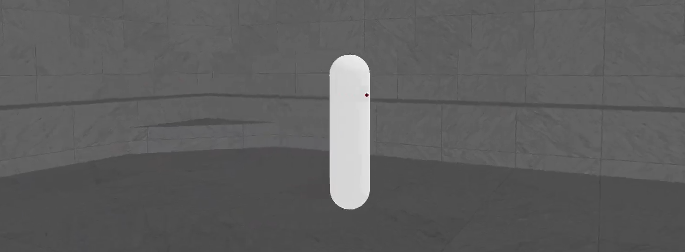
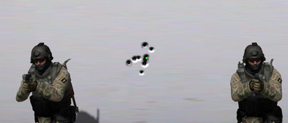
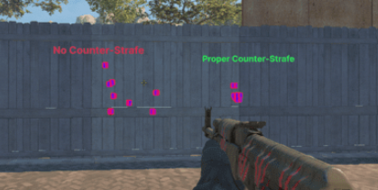
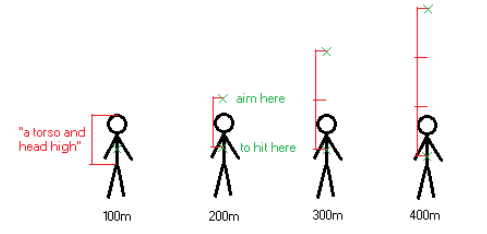
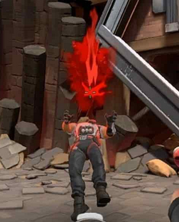
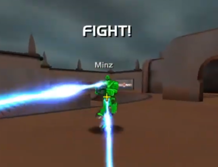
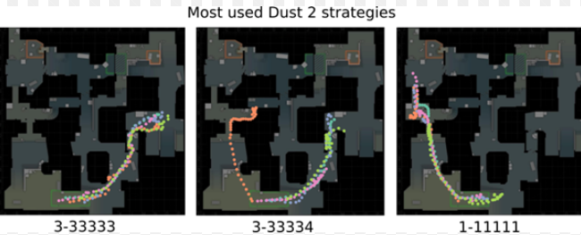
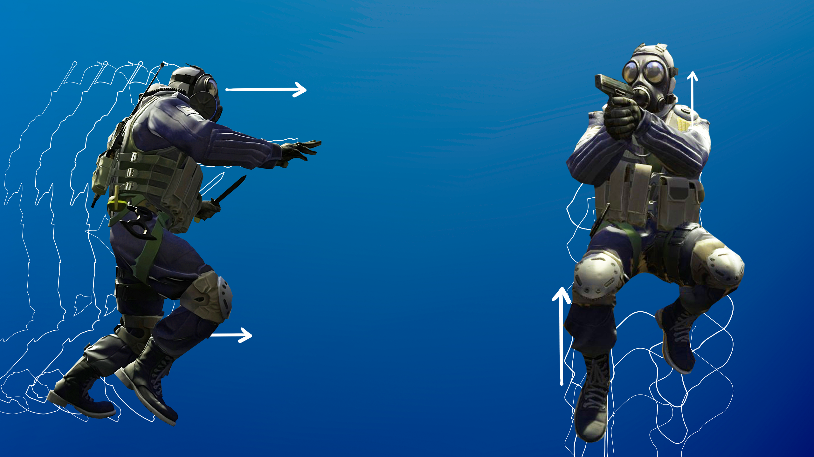
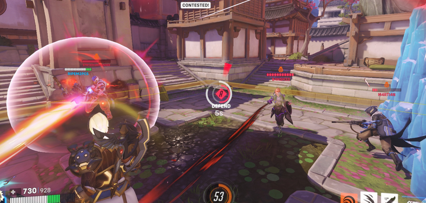

In the world of cyber-athletes, hardcore gamers, and tryhards, the cult of aiming has been elevated to an absolute. Hours on training maps, endless duels, grinding in aim trainers, and the pursuit of the perfect sensitivity, mouse, mousepad, skates, posture, resolution, FOV, etc., etc. – these are the rituals of the modern neo-pilgrim, who believes that reaction speed and mouse precision will lead them to the top-1. But in reality, a hardcore analysis of most games “casualizes” aim as a key skill. In most modern competitive multiplayer games, “pure” aim is deliberately placed in a subordinate position by the developers. Its potential is harshly limited by systems designed to level the playing field between players of different skill levels.
The Great Equalizer: RNG, Movement, and Uncontrollable Factors
The main enemy of raw aiming skill is randomness and limitations. Developers figured out long ago that a game where victory belongs entirely to the one with faster reactions and better mouse control is doomed to a niche audience (the Quake series serves as an example). New players would leave, their asses sore, and matchmaking wouldn’t be able to handle the giant skill gap between the top and the bottom.
Hence, the crutch systems come into play:
-
Random Bullet Spread (RNG Spread): The most obvious example. Even in the most popular tactical shooter Counter-Strike, which is considered the esports benchmark (well, at least it’s the most popular), bullets from any weapon while standing don’t fly strictly to one point, but within a certain circle of spread. In Valorant, this spread is even more pronounced. There’s no way to guaranteed control every bullet - you can only increase the probability of a hit. That’s a huge difference. Even a memorized spray pattern isn’t an exact science; it’s a ritual dance around random deviation.

-
Movement Speed Control: A key but often overlooked aspect. In many games (CS2, Valorant, R6 Siege) the base movement speed of characters is relatively low and predictable. This is a powerful equalizing tool. Against a slow target, both a noob and a pro will aim almost equally effectively. The difference in their skill will be minimal. A tracking genius cannot reveal their full potential simply because the target doesn’t challenge them. The entire “spread” between bad and good aim shrinks. The difference becomes noticeable when a fast, unpredictable target appears. Here, a noob will simply get lost and won’t be able to hit it, while a cracked player, albeit with worse results than against a slow target, will still be able to track it. Thus, slow movement is a hidden mechanism that prevents a strong aimer from unleashing their full potential against a weak opponent.
-
Moving Accuracy: A mechanic almost entirely removed from tactical shooters. In the same CS, firing while moving is synonymous with “miss.” This is a conscious decision that shifts the focus from shooting mechanics to positioning and tactics (counter-strafing, stop-shots).

-
Bloom, damage falloff, complex ballistics — all these are layers of RNG that add a factor of luck to the equation. Sometimes a wild shot will hit, while a perfectly aimed one will miss.

The core idea is to lower the skill ceiling for aim (to neutralize the aim advantage). The difference between a good and a god-like aimer is negated by the fact that even a god can’t guarantee a hit due to RNG, and against a slow target, their superiority won’t be as noticeable. A novice always has a chance for a random hit or a “lucky” headshot.
High TTK vs Low TTK: The Aim-Dependency Paradox
Here lies the main paradox that many fail to grasp.
-
Low TTK (Time To Kill): Characteristic of tactical shooters (CS2, Valorant, R6 Siege). A kill happens in 1-2 hits. It would seem that jewel-like aim is needed here to land headshots consistently. But in reality, aim is less important than it seems. The decisive factor is often not the pure shot, but: Positioning (you can catch an enemy by surprise, get an easy kill without even starting a duel), Angle knowledge (pre-fires, off-angles, etc.), Luck (a random bullet flew into the face. A noob just jerked their hand, fired while running/jumping and one-tapped a much stronger player).

-
High TTK: A classic for arena shooters (Quake, Apex Legends, Overwatch 2, The Finals). Here, to kill an enemy, you need to continuously track them and hit them many times in a row. It’s simply impossible to track by accident for dozens of seconds.

And this is where raw aim takes the front seat. A lucky shot won’t decide anything here. You need to track the target long and accurately. In high-TTK games, the gap in aiming skill between players is much more visible. A strong player will consistently track and kill a novice, who simply won’t have the precision and mouse control to deal enough damage. Tactics and positioning alone won’t solve the problem here – you absolutely need to hit your shots (though you can try to compensate with movement, which again expands the aim-advantage spread based on the points above).
Escape from Aim: Tactics, Movement, and Abstract Abilities
Since pure aim is a difficult skill, requiring thousands of hours to hone, developers shift the focus to other, more “democratic” mechanics:
- Tactics and Communication. You can be terrible with a mouse but still outsmart your opponent by taking unexpected positions, making calls for team play, and using utility.

- Movement. In tactical shooters, it works as a limiter (slow and predictable). In arena shooters, it works as a divider (fast and complex), allowing a skilled player to dodge and demonstrate superior tracking.

- Abilities. The most powerful tool for de-leveling aim. Why aim perfectly when you can spam your opponent with grenades, turrets, smokes, slow-fields, and flashbangs? These mechanics require not precision, but good decision-making and timing.

Conclusion
Aim undoubtedly remains an important skill. But most competitive games are designed to “casualize” it, to make it one of many factors for victory, but not the only one, and certainly not the primary (decisive) one. Slow movement, RNG spread, and an abundance of abilities are part of a design philosophy aimed at keeping the game accessible to millions, not just a select few with perfectly honed motor skills.